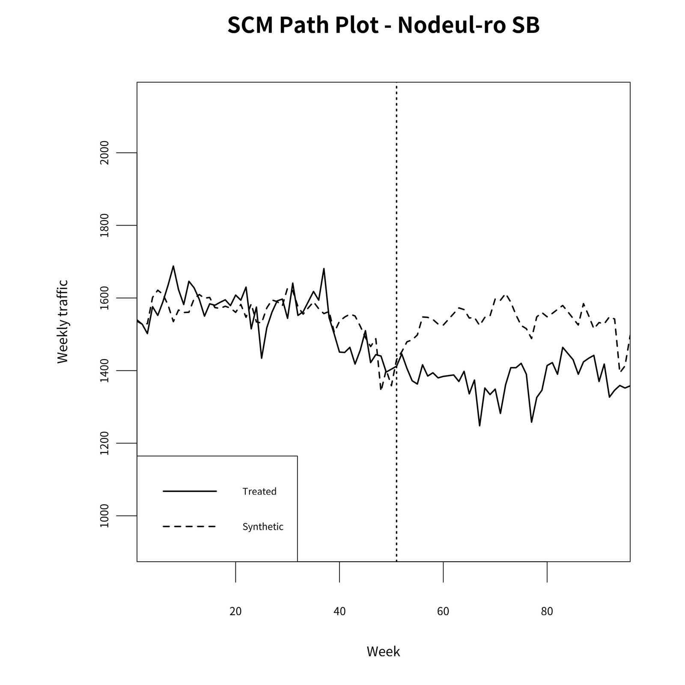
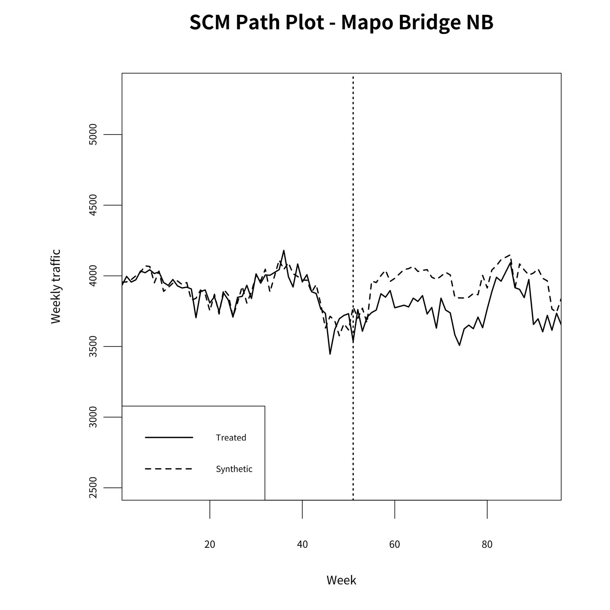
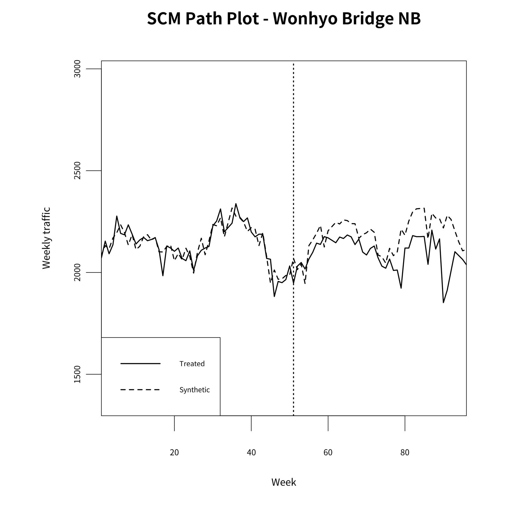
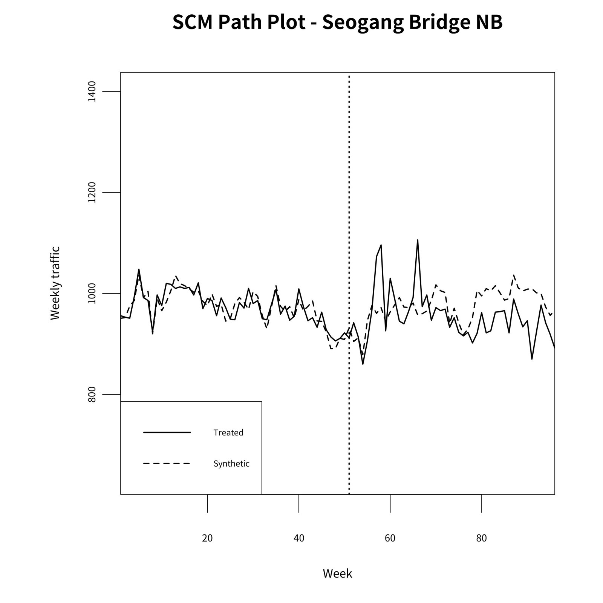
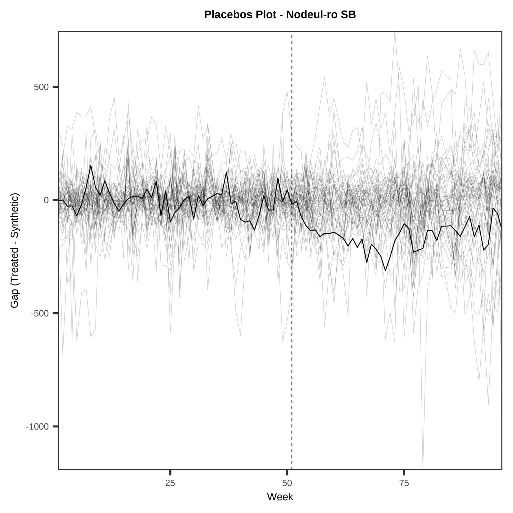
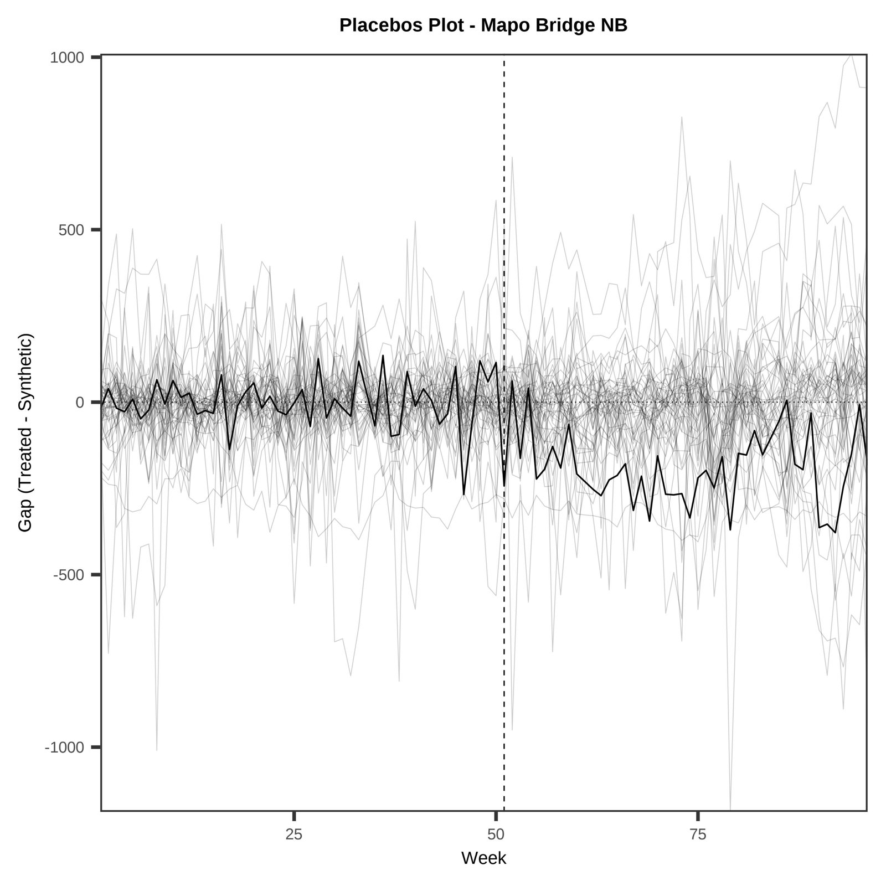
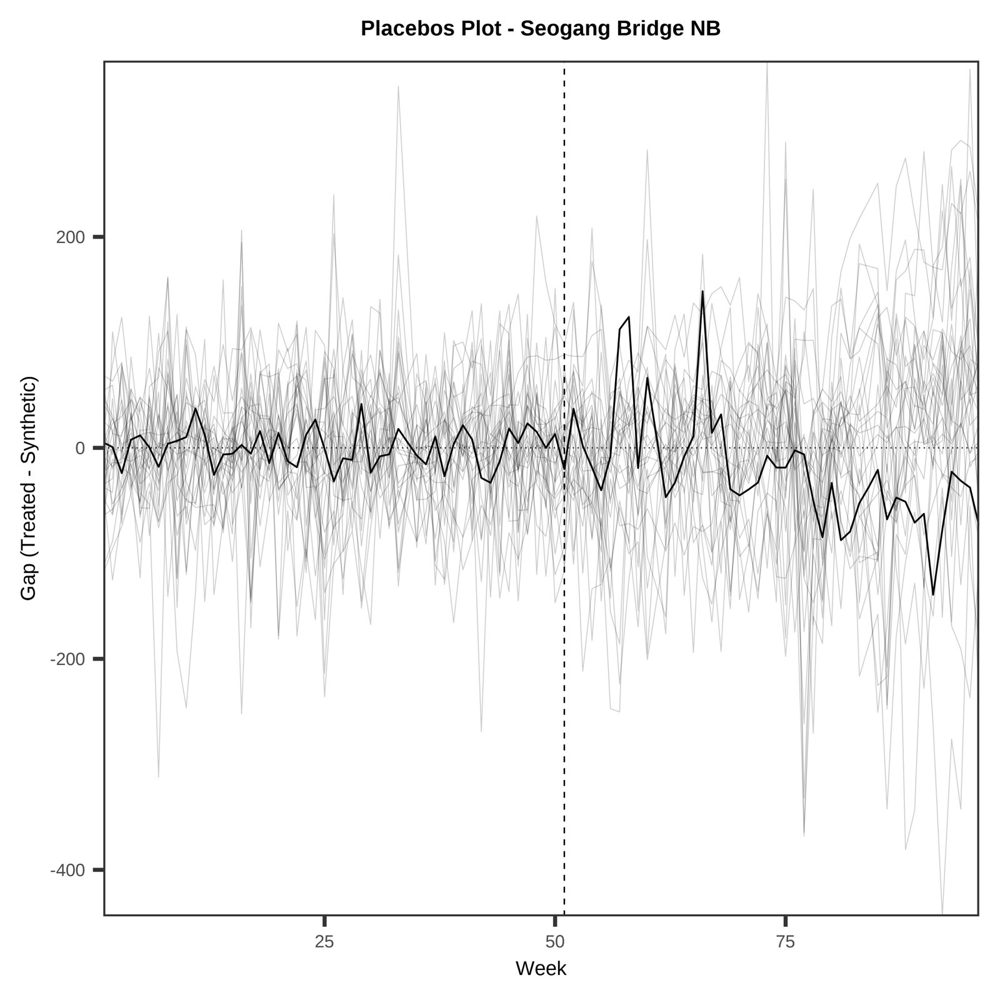
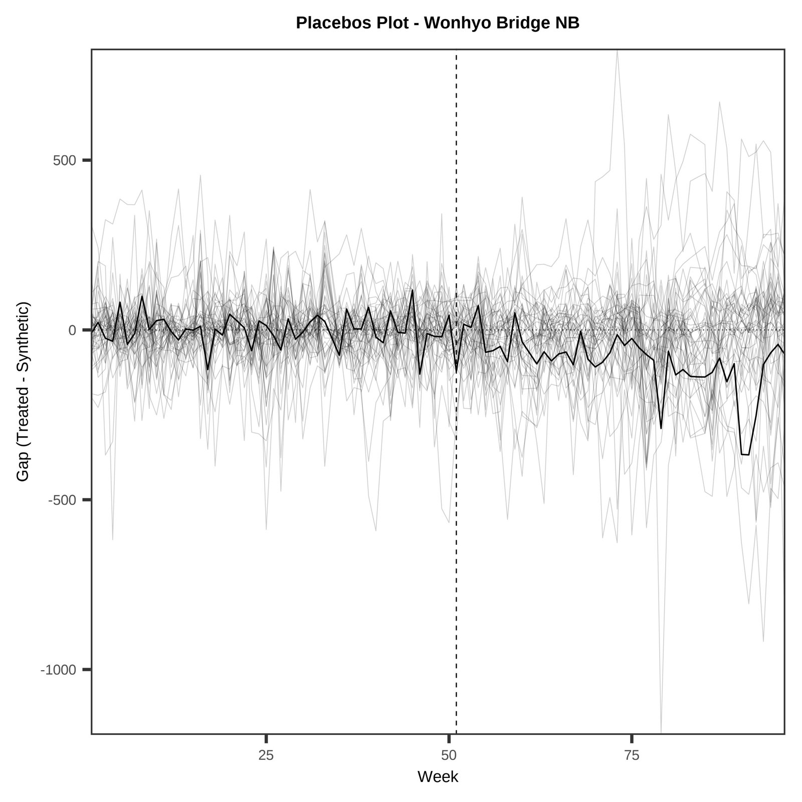

③ 여의도 연결도로 12개 방향 SCM③ SCM for 12 directional road links around Yeouido
여의도로 들어오고 나가는 도로 링크 12개(방향별)를 각각 처치 단위로 두고, 서울 밖 도로 53개를 도너로 합성통제를 추정했습니다.Each of 12 directional links into and out of Yeouido is a treated unit; 53 road links outside Seoul are donors.
설계Design
- 결과변수: 평일 06–09시 시간당 교통량, 일 중앙값 → 주 중앙값. 처치 시점 51주(2024-01-29), 사전 1–50주.Outcome: weekday 06–09h hourly volume, daily median → weekly median. Treatment at week 51 (2024-01-29); pre-period weeks 1–50.
- 사후 기간: 51–96주. 공사 영향 지점(01·02·10)은 51–72주.Post window weeks 51–96; links 01, 02, 10 (affected by construction) use weeks 51–72.
- 예측변수: 차로 수 평균, 속도 중앙값, 교통량 5개 구간 평균. V·W는 처치 전 기간 예측오차를 최소화하도록 함께 추정.Predictors: mean lanes, median speed, five block means of volume; joint estimation of V and W.
- 추론: 사후/사전 RMSPE 비율(Abadie et al. 2015). 위약 도너에 처치 링크 포함, 사전 적합도 필터 없음 → p = 순위/54. 5배 이하 필터는 민감도.Inference: post/pre RMSPE ratio (Abadie et al. 2015); the treated link joins each placebo's donor pool; no pre-fit filter → p = rank/54. The ≤ 5× filter is a sensitivity check.
- LOO: 양의 가중치 도너를 하나씩 빼고 V·W 재추정(two-step).LOO: drop each positive-weight donor and re-estimate V and W (two-step).
결과Results
| # | 링크Link | 사후 주Post weeks | 반사실 대비vs CF | RMSPE 비율RMSPE ratio | 순위Rank | p (전체)p (all) | p (≤5배, 위약 수)p (≤5×, n) | LOO |
|---|---|---|---|---|---|---|---|---|
| 01 | Gyeongin-ro outbound경인로 유출 | 51–72 | −2.74% | 1.54 | 6/54 | 0.111 | 0.125 (47) | −2.97 – −1.38 |
| 02 | Gyeongin-ro inbound경인로 유입 | 51–72 | −1.21% | 1.12 | 32/54 | 0.593 | 0.615 (51) | −1.66 – −1.04 |
| 03 | Nodeul-ro northbound노들로 북행 | 51–96 | −7.60% | 1.65 | 14/54 | 0.259 | 0.264 (52) | −8.79 – −6.57 |
| 04 | Nodeul-ro southbound노들로 남행 | 51–96 | −10.03% | 2.88 | 1/54 | 0.019 | 0.020 (49) | −13.85 – −9.85 |
| 05 | Mapo Bridge southbound마포대교 남행 | 51–96 | −4.38% | 2.07 | 5/54 | 0.093 | 0.094 (52) | −5.16 – −4.24 |
| 06 | Mapo Bridge northbound마포대교 북행 | 51–96 | −4.85% | 3.01 | 1/54 | 0.019 | 0.019 (52) | −5.40 – −3.65 |
| 07 | Seogang Bridge southbound서강대교 남행 | 51–96 | −2.18% | 1.36 | 34/54 | 0.630 | 0.674 (45) | −2.94 – −1.25 |
| 08 | Seogang Bridge northbound서강대교 북행 | 51–96 | −2.18% | 3.36 | 1/54 | 0.019 | 0.033 (29) | −2.79 – −0.78 |
| 09 | Yeouidaebang-ro southbound여의대방로 남행 | 51–96 | +0.29% | 1.48 | 25/54 | 0.463 | 0.511 (46) | −0.51 – +3.07 |
| 10 | Yeouidaebang-ro northbound여의대방로 북행 | 51–72 | −1.69% | 1.29 | 15/54 | 0.278 | 0.300 (49) | −2.96 – −1.70 |
| 11 | Wonhyo Bridge southbound원효대교 남행 | 51–96 | +0.72% | 1.41 | 27/54 | 0.500 | 0.523 (43) | −1.21 – +0.93 |
| 12 | Wonhyo Bridge northbound원효대교 북행 | 51–96 | −4.23% | 2.73 | 1/54 | 0.019 | 0.020 (48) | −4.60 – −3.51 |
출처Source: results/03_road_scm/summary/road_abadie2015_placebo_loo_cf.csv; 민감도 p와 위약 수sensitivity p and placebo count: results/03_road_scm/all_units_summary.csv (p_tau5, n_tau5).
노들로 남행, 마포대교 북행, 서강대교 북행, 원효대교 북행 4개 링크가 처치 링크 중 RMSPE 비율 1위(p = .019)입니다. 모두 감소 방향(−2.18% ~ −10.03%)이며 LOO 범위도 0을 넘지 않습니다.Four links — Nodeul-ro S, Mapo Bridge N, Seogang Bridge N, Wonhyo Bridge N — rank first (p = .019). All are decreases (−2.18% to −10.03%) and their LOO ranges stay below zero.
summary/road_placebo_p_all_vs_tau5.csv·summary/road_loo_cf.csv는 이전 사양(위약 도너에 처치 링크 미포함) 실행 값입니다.The smallest attainable p is 1/54 ≈ .019, and 12 links are tested separately, so read with multiple testing in mind. summary/road_placebo_p_all_vs_tau5.csv and summary/road_loo_cf.csv come from the earlier specification (treated link not in placebo donor pools).원고 그림Manuscript figures




위약 격차 (원고용 *_tau5.jpg)Placebo gaps (manuscript *_tau5.jpg)
4.placebo_gaps_*_tau5.jpg입니다. 사전 RMSPE가 처치 링크의 5배 이하인 위약만 회색으로 그리지만, p값은 위약 전체(처치 링크 포함, 필터 없음) 기준입니다. 그림에 보이는 위약 수와 p의 분모가 다를 수 있습니다.The manuscript placebo-gap figures are 4.placebo_gaps_*_tau5.jpg. They draw only placebos with pre-RMSPE ≤ 5× the treated link (grey), but the p-value is computed over all placebos (treated link included, no filter), so the number of lines shown can differ from the p denominator.



12개 링크 전체 그림 보기 →All figures for the 12 links →
코드Code
code/03_road_scm/ — 본 결과: run_nested53_abadie2015_placebo.R. 도로 교통량 패널 필요(재배포 조건 확인 중).headline run: run_nested53_abadie2015_placebo.R; needs the road panel (licence pending).